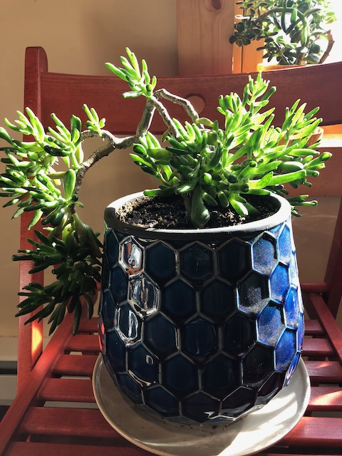

The old jade in the blue pot
Published 2020-10-16

This might be my oldest jade. Like most of my jades, it was a cutting from one of dad’s massive plants. I lived in my office in Hayward for many years, has been neglected and dried out more than once, and was transplanted into this lovely blue pot last year.